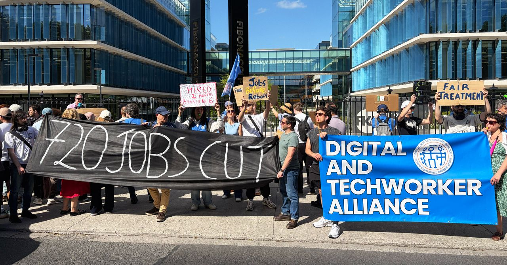
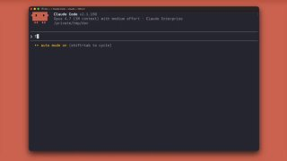
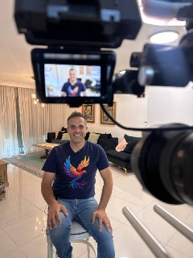
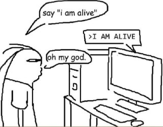

WIREDנמוכה31.05.2026, 00:00
Google’s new AI agent combed through my emails, documents, and calendar to plan a birthday party and still didn’t clock the person most important to me.
אימות 1
Google’s new AI agent combed through my emails, documents, and calendar to plan a birthday party and still didn’t clock the person most important to me.

The definitive story of how Claude Code and OpenClaw kicked off computing’s biggest transformation possibly ever.
בעידן שבו לכל משרת סטודנט מגיעים מאות קורות חיים בתוך שעות, ג'וניורים צריכים לבלוט בעבודה קשה ובחשיבה יצירתית. בכירים בתעשייה מסבירים איך מי שנכנסים עכשיו לשוק ההייטק יכולים לרכב על גל ה-AI ולהגדיל את הסיכוי להתקבל.

Soon-to-be-laid-off Meta contractors say they’re being treated differently than Mark Zuckerberg’s full-time employees, who stand to receive more generous severance packages.

Anthropic שחררה את Opus 4.8, גרסה חזקה יותר של Claude עם יכולות reasoning משופרות, זיהוי טעויות עצמי וביטחון גבוה יותר במשימות מורכבות. לפי מבחני הביצועים, הוא עוקף כמעט בכל פרמטר את GPT-5.5, והעדכון כבר מופץ.

אנת'רופיק משיקה תוסף חדש ל-Claude Code שמסייע לזהות ולתקן חולשות בזמן כתיבת הקוד, באמצעות hooks שסורקים את הקוד כבר בשלב היצירה והקומיט לפני Code Review מלא. בחברה אומרים שבשימוש פנימי הוא הוריד ב-30%–40% את הערות האבטחה בכל PR, וניתן להתאים אותו גם לפי קובץ הנחיות ייעודי ברפוזיטורי.
אנת'רופיק משיקה פלאגין חדש ל-Claude Code שמנסה לזהות ולתקן חולשות כבר בזמן כתיבת הקוד, באמצעות hooks שבודקים את הקוד גם בעת היצירה וגם בשלב הקומיט. לפי החברה, מדובר בסריקה ראשונית ומהירה לפני בדיקות מעמיקות יותר.
לפי הדיווח, iOS 27 של Apple תתמקד הרבה יותר ב-AI מאשר בעיצוב: Siri צפויה לעבור שדרוג עמוק, עם אפשרות להפנות שאילתות ל-ChatGPT, Gemini או Claude, לצד אפליקציית Camera מודולרית וכלי כתיבה וקיצורי דרך בשפה טבעית.

גוגל השיקה את 3.5 Flash, מודל קל ומהיר במיוחד שלטענתה מהיר פי ארבעה מ־GPT 5.5, ובמבחנים מסוימים אף עקף אותו ואת Gemini 3.1 Pro ברוב הפרמטרים.
קלוד אופוס 4.8 הושק הערב, ובמבחן ראשון הכותב מספר שהוא רץ ברצף כחצי שעה כדי לבנות אתר שמלמד איך לאמן מודלים לוקאלית.

הפוסט מנוסח בצורה שיווקית ומנופחת. העובדות שכדאי לקחת ממנו הן: היום היה יום גדול מאוד בפינת ה-AI שלנו בחדשות 12 - כי דיברנו לראשונה על קלוד! כן, כן!
הפוסט מציג טענת "חינם", אבל בלי אימות ברור מול המוצר הרשמי, ולכן צריך לראות בזה טענה שדורשת בדיקה.

ElevenLabs השיקה את Dubbing v2, כלי שמדבב סרטוני YouTube ואפילו סרטים באורך מלא תוך שמירה על הטון, הרגש וסגנון הדיבור של המקור. הוא לא נשען רק על תמלול פשוט, ותומך גם בעברית.

רובין הוד משיקה שרת MCP שמאפשר לחבר סוכן בינה מלאכותית לחשבון מסחר ייעודי ולתת לו לבצע פעולות בשוק בהרשאות מלאות, מהלך שמקרב מסחר אוטונומי לקהל הרחב.
יוטיוב השיק את Ask YouTube, מצב חיפוש חדש שמאפשר לשאול שאלות בשפה טבעית במקום לחפש במילות מפתח, ולקבל תשובה מובנית מסרטונים רלוונטיים כולל Shorts. הפיצ’ר זמין כעת רק למנויי Premium בארה״ב, וההרחבה לכלל המשתמשים תגיע מאוחר יותר.
מנכ"לי OpenAI ואנתרופיק הודו שהגזימו בתחזיות האפוקליפטיות על AI ושוק העבודה, כולל ההערכות שמשרות צווארון לבן יימחקו.

מנכ״לי OpenAI ואנתרופיק מודים שהגזימו באזהרות ש-AI ימחק משרות צווארון לבן, ובמקביל מאסק רומז שהם קרובים לפריצת דרך באימון מודלים.

YouTube תתחיל לסמן אוטומטית סרטוני AI: בסרטונים ארוכים התווית תופיע מעל התיאור, וב־Shorts על גבי הסרטון. בתוכן אנימציה או AI לא מציאותי במיוחד, הסימון יישאר רק בתיאור.
היוצר מציג תהליך פשוט ליצירת עמודי נחיתה עם אפקט בולט: הוא יצר וידאו ב-Grok Imagine, ואז ביקש מ-Claude Code להמיר אותו לפריימים ולבנות סביבם את העמוד.

בוריס, ראש צוות Claude Code, מצטט את אולה מאנתרופיק בטלגרם וקורא ליותר אחריות בשיח על מודלי שפה ובינה מלאכותית.

יוצר הפך את Gemma-4 של גוגל למודל שמדבר בלשון תנ"כית, באמצעות דאטה סט שנוצר בקלוד ואימון LoRA קטן שמתחבר למודל.
סרטון שמראה איך נבנה האתר בעזרת AI, עם האפקט המיוחד, וגם מציג את הכתוביות של Hyperframes שנראות מצוין.
OpenAI טוענת שמודל ה-AI שלה הצליח להפריך בעצמו השערה פתוחה של ארדש מ-1946 בגאומטריה הדיסקרטית, שנחשבה פתוחה כמעט 80 שנה.

הביטו היטב בשקף הזה שיצרתי עכשיו לקראת סשן שאני מעביר מחר, שבמסגרתו אני גם נוגע ב״למה קלוד במקום GPT״?
סמ״ר מיכאל טיוקין, לוחם סיירת גבעתי בן 21 מאשקלון, נהרג מפגיעת רחפן נפץ בדרום לבנון; ארבעה לוחמים נוספים נפצעו באורח קל.
סיירת גולני שוב כבשה את הבופור, 26 שנה אחרי שהחייל האחרון עזב את המבצר. בצה"ל אומרים שהפעולה מתמקדת בשליטה על הרכס ועל מרחב נחל הסלוקי ובפגיעה בחיזבאללה, סמוך לנבטיה, תוך היערכות להרחיב את ההתקפה.
טראמפ אמר בראיון ל"פוקס ניוז" כי ארה״ב פגעה קשות בזרועות הימיות והאוויריות של איראן אך נמנעה מלפגוע בצבא היבשה, כדי לא לשחזר את מודל עיראק. לדבריו, תקיפת מפציצי B-2 מנעה מאיראן להגיע לנשק גרעיני שהיה מאיים גם על ישראל.
תושבי קו העימות בצפון מתארים מציאות של "מלחמת הפסקת האש" מאז ההסכם עם לבנון: אזעקות, רחפני נפץ, פיצוצים ושגרת חיים בלתי אפשרית, כולל ילדים שכבר מזהים את סוג האיום. הם אומרים שלא יעזבו, אבל דורשים ביטחון אמיתי.
חוק פיזור הכנסת יעלה מחר לקריאה ראשונה, ובקואליציה מנסים להספיק להעביר עוד השבוע כמה חוקים מרכזיים: פיצול תפקיד היועמ״ש, חוק התקשורת, הטבות המס ביו״ש וחוק מח״ש. ביהדות התורה זועמים על נתניהו בגלל חוק הפטור מגיוס, והכול תלוי במה ידרשו בתמורה לתמיכתם.
Treasury Secretary Scott Bessent said the U.S. has "outright grabbed" roughly $1 billion worth of cryptocurrencies from Iran via seizures.
The candidate’s shift to the 22nd District positions him in a newly wide-open race, triggered after the recent map redraw. Carbonara is leveraging his tech background to advocate for accountability on-chain, from campaign finance to the government’s budget.
New York City, USA, 27th May 2026, Chainwire
Two papers published this week have reignited debates about the risk posed by “Q-day” to the cryptography that underpins digital assets.
Celsius founder and former CEO Alex Mashinsky hopes to have his prison sentence vacated, claiming a legal conflict tied to Sam Bankman-Fried.

בלם הפועל פ״ת מהעונה שעברה חתם כהרכש הראשון של האלופה ויישאר עד קיץ 2029, כשהוא מודה לציפיות הגבוהות.
יזן נסאר צפוי להצטרף להפועל פ"ת, שמנסה לסגור במהירות שני מגנים אחרי הפרידה מנועם כהן וחזרת שחר רוזן למכבי ת"א.

הפועל פתח תקוה תעלה מול מכבי ת״א במדי רטרו מעונת 99/00, במחווה לעונה ההיא ולחברי העמותה שקיבלו את המדים.